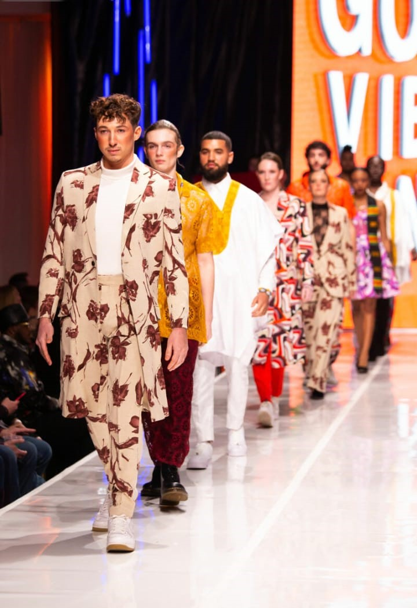
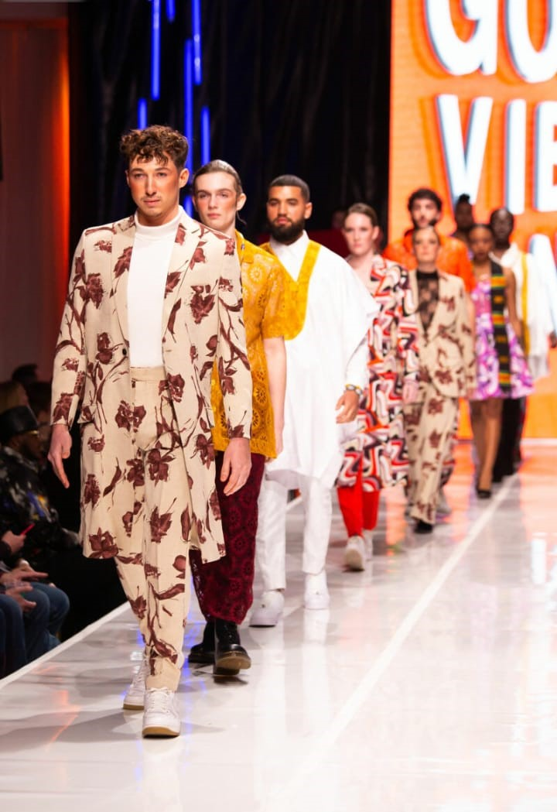
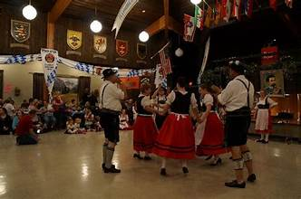
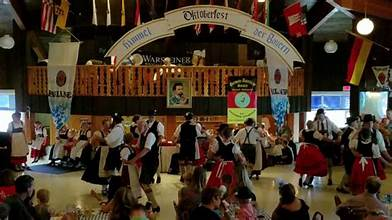
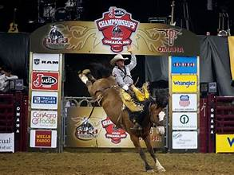

Chamber of Commerce - Omaha, Nebraska
Join us for the Chamber of Commerce meet and greet on Wednesday at 7:00 p.m.
Click here to learn more about our membership.
Join Nowinvest in Berkshire Hathaway today.

The College World Series, also known as the College World Series Baseball, is the world's largest professional baseball competition. Many professional baseball teams have played in the World Series, and will come to Omaha to play at the Stadium named Charles Schwab Field.

The Fashion Week in Omaha Nebraska is the fourth largest annual fashion event in the United States. It usually occurs during the fall season and is attended by high-end models from all over the nation.
 

Oktoberfest, is one of the cultural events that takes place in the city of Omaha. People during this time enjoy the festival by dancing, drinking, and eating brats and schnitzel. This and other cultural events of the like are fine opportunities for businesses of all sorts to take part in integrating themselves in the community of Omaha.
 The Omaha Rodeo, is the annual rodeo held in Omaha, Nebraska. It has been around for 70 years, and celebrates the culture and traditions of the city. It is held in the Ak-Sar-Ben stadium and is held by the Professional Cowboys Rodeo Association (PRCA)
